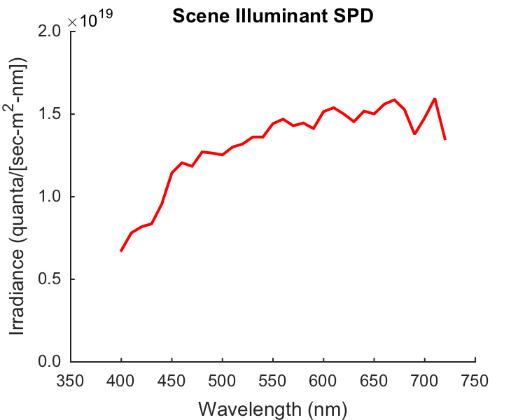
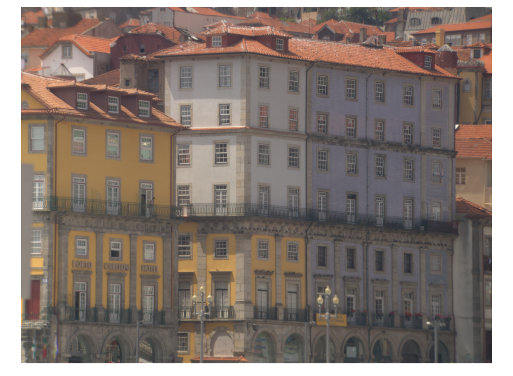
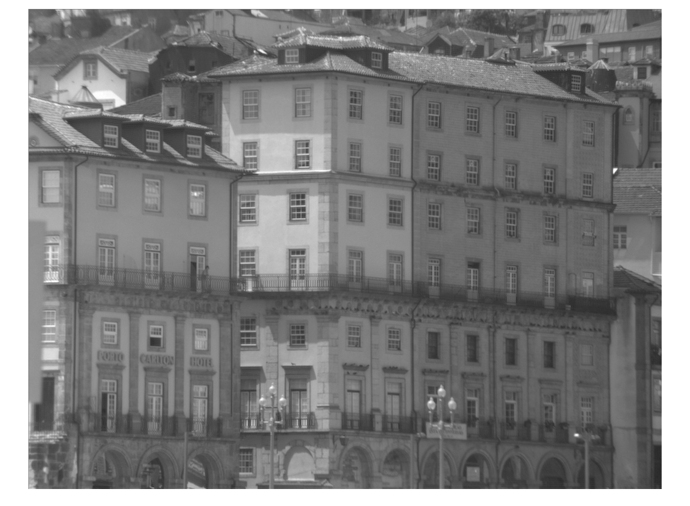
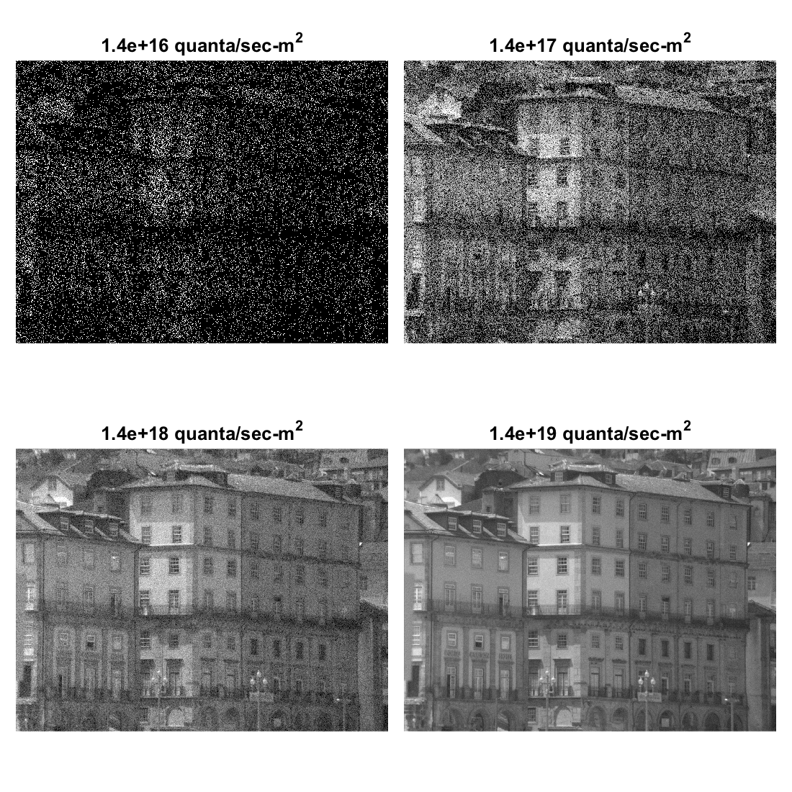
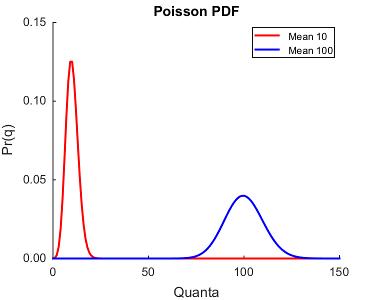
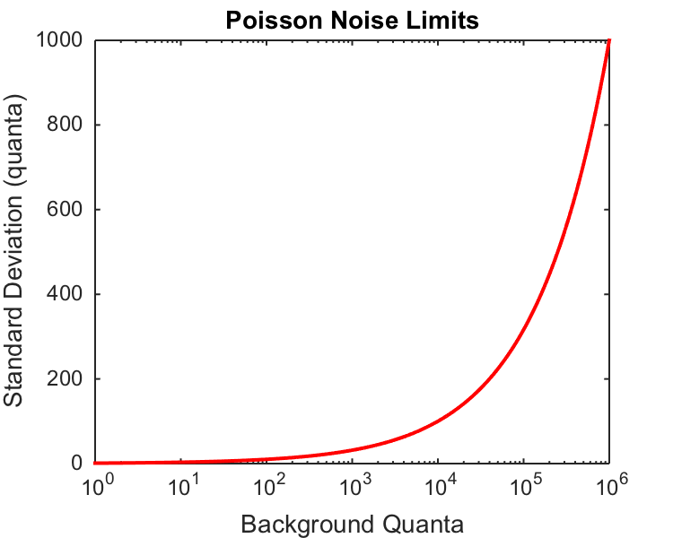
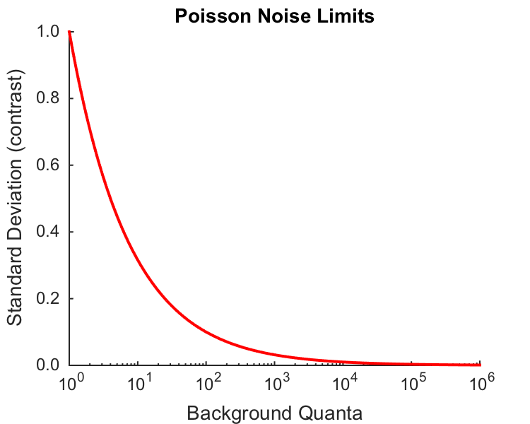

Contents
- Function implementing the isetbio validation code
- Hello
- Supress irritating warnings
- Frozen noise, so that we can validate OK
- Load a hyperspectral scene in ISETBIO format.
- Parameters
- The scene object has a view about what the illuminant is.
- Make optical image
- Figure out optical image cropping parameters
- Look at scene and oi sRGB images
- Get the retinal irradiance per pixel
- Pick an integration time to get photons
- Make image noise free at selected wavelength
- Make images for different irradiance levels
- Make some explanatory figures that illustrate properties of the Poisson distribution.
- Second explanatory figure plots Poisson SD as function of mean
- Save validation data
- Restore warning state
- Restore warning state
- Rethrow error
function varargout = cbOpticsImage_PoissonNoiseImages(varargin) % % Illustrate magnitude of Poisson noise as a function of light level. % % Produces images that show Poisson noise as a function of illuminant % irradiance. Also produces some explanatory figures about the Poisson % distribution. % % (c) David Brainard and Andrew Stockman, 2015 varargout = UnitTest.runValidationRun(@ValidationFunction, nargout, varargin); end
Function implementing the isetbio validation code
function ValidationFunction(runTimeParams)
Hello
clear global; ieInit; UnitTest.validationRecord('SIMPLE_MESSAGE', sprintf('%s',mfilename)); outputDir = sprintf('%s_Output',mfilename); if (~exist(outputDir,'dir')) mkdir(outputDir); end
Supress irritating warnings
warnS = warning('off','images:initSize:adjustingMag'); try
Frozen noise, so that we can validate OK
randomSeedValue = 26;
rng(randomSeedValue);
Load a hyperspectral scene in ISETBIO format.
A set of such images is produced as part of the BLHyperspectralImageComputations project. You will need to get that project and generate the images for this script to run.
theHyperSceneDir = '/Volumes/Users1/Shared/Matlab/Analysis/hyperspectral-images/manchester_database'; theHyperSceneName = 'isetbioSceneFor_scene7.mat'; if (~exist(theHyperSceneDir,'dir')) fprintf('You need to get the hyperspectral image data to run this script.\n'); return; end theData = load(fullfile(theHyperSceneDir,theHyperSceneName)); theData.sceneRGBImage = sceneGet(theData.scene,'rgb image'); % vcAddAndSelectObject(theData.scene); sceneWindow;
Parameters
theData.whichWavelength = 550;
meanScalar = 0.2;
displayGamma = 0.5;
theIrradianceScaleFactors = [1e-3 1e-2 1e-1 1];
The scene object has a view about what the illuminant is.
Get this to help us set a reasonable physical scale for the scene.
sceneWave = sceneGet(theData.scene,'wave'); sceneWlIndex = find(sceneWave == theData.whichWavelength); sceneS = WlsToS(sceneWave); theData.sceneIlluminantSpdRadiance_WattsPerM2SrNm = sceneGet(theData.scene,'illuminant energy'); theData.sceneIlluminantSpdRadiance_QuantaPerSecM2SrNm = sceneGet(theData.scene,'illuminant photons'); sceneIlluminantXYZ = sceneGet(theData.scene,'illuminant XYZ'); load T_xyz1931; T_xyz = SplineCmf(S_xyz1931,T_xyz1931,sceneS); ourSceneIlluminantXYZ = 683*T_xyz*theData.sceneIlluminantSpdRadiance_WattsPerM2SrNm*sceneS(2); theData.sceneIlluminantTotalIrradiance_WattsPerM2 = 2*pi*sum(theData.sceneIlluminantSpdRadiance_WattsPerM2SrNm*sceneS(2)); theData.sceneIlluminantTotalIrradiance_QuantaPerSecM2 = 2*pi*sum(theData.sceneIlluminantSpdRadiance_QuantaPerSecM2SrNm*sceneS(2)); % Plot the illuminant spectrum if (runTimeParams.generatePlots) [illumSpdFig,figParams] = cbFigInit; figParams.xLimLow = 350; figParams.xLimHigh = 750; figParams.xTicks = [350 400 450 500 550 600 650 700 750]; figParams.xTickLabels = {'^{ }350_{ }' '^{ }400_{ }' '^{ }450_{ }' '^{ }500_{ }' ... '^{ }550_{ }' '^{ }600_{ }' '^{ }650_{ }' '^{ }700_{ }' '^{ }750_{ }'}; figParams.yLimLow = 0; figParams.yLimHigh = 2e19; figParams.yTicks = [0 0.5e19 1.0e19 1.5e19 2.0e19]; figParams.yTickLabels = {' 0.0 ' ' 0.5 ' ' 1.0 ' ' 1.5 ' ' 2.0 '}; plot(sceneWave,2*pi*theData.sceneIlluminantSpdRadiance_QuantaPerSecM2SrNm,'r','LineWidth',figParams.lineWidth); xlabel('Wavelength (nm)','FontSize',figParams.labelFontSize); ylabel('Irradiance (quanta/[sec-m^{2}-nm])','FontSize',figParams.labelFontSize); title('Scene Illuminant SPD','FontSize',figParams.titleFontSize); cbFigAxisSet(illumSpdFig,figParams); text(345,2.075e19,'\times10^{19}','FontName',figParams.fontName,'FontSize',figParams.axisFontSize); FigureSave(fullfile(outputDir,[mfilename '_IlluminantQuantalUnits']),illumSpdFig,figParams.figType); end % Print out some information. UnitTest.assertIsZero(max(abs(sceneIlluminantXYZ(:)-ourSceneIlluminantXYZ(:))),'Check on XYZ computation',0.1); sceneFov = sceneGet(theData.scene,'horizontal fov'); fprintf('Scene field of view (horizontal) is %0.1f degrees\n',sceneFov); fprintf('Scene illumination luminance taken as %0.0f cd/m2\n',sceneIlluminantXYZ(2)); fprintf('Scene illuminant irradiance at selected wavelength (%d nm) is %0.2g quanta/[sec-m2-nm]\n', ... theData.whichWavelength,2*pi*theData.sceneIlluminantSpdRadiance_QuantaPerSecM2SrNm(sceneWlIndex)); fprintf('Scene illuminant total irradiance %0.2g Watts/m2, %0.2g quanta/[sec-m2]\n',... theData.sceneIlluminantTotalIrradiance_WattsPerM2,theData.sceneIlluminantTotalIrradiance_QuantaPerSecM2);
Scene field of view (horizontal) is 5.6 degrees Scene illumination luminance taken as 58126 cd/m2 Scene illuminant irradiance at selected wavelength (550 nm) is 1.4e+19 quanta/[sec-m2-nm] Scene illuminant total irradiance 1.5e+03 Watts/m2, 4.3e+21 quanta/[sec-m2]
Make optical image
We do this to get retinal irradiance, and for the first part of this script we only want photon noise so we skip the blurring. THere are built in ways to skip the blurring, but they have side effects that currently surprise me. So we just set an OTF off all ones and get on with life.
theData.oi = oiCreate('human'); theData.optics = oiGet(theData.oi,'optics'); theData.optics = opticsSet(theData.optics,'off axis method','skip'); OTFData = opticsGet(theData.optics,'otfdata'); OTFDeltaData = ones(size(OTFData)); theData.optics = opticsSet(theData.optics,'otfdata',OTFDeltaData); theData.oi = oiSet(theData.oi,'optics',theData.optics); theData.oi = oiCompute(theData.oi,theData.scene); theData.oiRGBImage = oiGet(theData.oi,'rgb image'); % vcAddAndSelectObject(theData.oi); oiWindow;
Figure out optical image cropping parameters
The optical image gets padded to allow the OTF convolutions to have something to look at outside the border of the original image. Figure out here how big this padding is so that we can crop the optical images back to the size of the original scene, give or take a pixel.
[sceneRows,sceneCols] = size(theData.sceneRGBImage(:,:,1));
[oiRows,oiCols] = size(theData.oiRGBImage(:,:,1));
extraRows = oiRows - sceneRows;
extraCols = oiCols - sceneCols;
cropRows = ceil(extraRows/2):oiRows-ceil(extraRows/2)-1;
cropCols = ceil(extraCols/2):oiCols-ceil(extraCols/2)-1;
Look at scene and oi sRGB images
Because these are normalized and we didn't blur, they look the same.
if (runTimeParams.generatePlots) figure; clf; imshow(theData.sceneRGBImage); set(gcf,'Name','Scene Radiance sRGB'); imwrite(theData.sceneRGBImage,fullfile(outputDir,[mfilename '_SceneRadianceRGB.png']),'png'); figure; clf; imshow(theData.oiRGBImage(cropRows,cropCols,:)); set(gcf,'Name','Retinal Image sRGB'); imwrite(theData.oiRGBImage(cropRows,cropCols,:),fullfile(outputDir,[mfilename '_RetinalIrradianceRGB.png']),'png'); end

Get the retinal irradiance per pixel
oiWave = oiGet(theData.oi,'wave'); oiWlIndex = find(oiWave == theData.whichWavelength); theData.oiIrradiance_PhotonsPerSecM2Nm = double(oiGet(theData.oi,'photons')); oiPixelSize_M = oiGet(theData.oi,'sample spacing'); oiPixelArea_M2 = oiPixelSize_M(1)*oiPixelSize_M(2); oiIrradiance_PhotonsPerSecPixel = theData.oiIrradiance_PhotonsPerSecM2Nm*oiPixelArea_M2; oiFov = oiGet(theData.oi,'fov'); fprintf('Optical image field of view (horizontal) is %0.1f degrees\n',oiFov); fprintf('Pixel size is %0.2f by %0.2f um\n',oiPixelSize_M(1)*1e6,oiPixelSize_M(2)*1e6); fprintf('Pixel area is %0.2f um\n',oiPixelArea_M2*1e12); % Print mean/maximum irradiance, as a check temp = theData.oiIrradiance_PhotonsPerSecM2Nm(cropRows,cropCols,:); meanIrradiance_PhotonsPOerSecM2 = mean(temp(:)); maxIrradiance_PhotonsPOerSecM2 = max(temp(:)); temp = theData.oiIrradiance_PhotonsPerSecM2Nm(cropRows,cropCols,oiWlIndex); selectedWavelengthIrradiance_PhotonsPerSecM2 = mean(temp(:)); fprintf('Mean retinal illuminance at selected wavelength (%d nm) is %0.2g quanta/[sec-m2]\n',theData.whichWavelength,selectedWavelengthIrradiance_PhotonsPerSecM2); fprintf('Mean optical image irradiance is %0.2g quanta/[sec-m2-nm]; max is %0.2g\n',meanIrradiance_PhotonsPOerSecM2,maxIrradiance_PhotonsPOerSecM2);
Optical image field of view (horizontal) is 6.9 degrees Pixel size is 1.24 by 1.24 um Pixel area is 1.53 um Mean retinal illuminance at selected wavelength (550 nm) is 1.6e+15 quanta/[sec-m2] Mean optical image irradiance is 1.6e+15 quanta/[sec-m2-nm]; max is 1.2e+16
Pick an integration time to get photons
theData.integrationTime_Sec = 0.050;
oiEnergy_PhotonsPerPixel = oiIrradiance_PhotonsPerSecPixel*theData.integrationTime_Sec;
Make image noise free at selected wavelength
meanPhotons0 = double(oiEnergy_PhotonsPerPixel(:,:,oiWlIndex));
scaledMeanPhotons0 = meanScalar*meanPhotons0/mean(meanPhotons0(:));
if (runTimeParams.generatePlots)
figure; clf;
imshow(scaledMeanPhotons0(cropRows,cropCols,:).^displayGamma);
set(gcf,'Name','No noise');
imwrite(scaledMeanPhotons0(cropRows,cropCols,:).^displayGamma,...
fullfile(outputDir,[mfilename '_NoNoiseImageAtWavelength.png']),'png');
end
 Make images for different irradiance levels
if (runTimeParams.generatePlots) noiseFigure = figure; clf; set(gcf,'Position',[81 114 1100 1100]); end for ii = 1:length(theIrradianceScaleFactors) % Get mean number of photons at each pixel at the desired wavelength % and irradiance scale factor meanPhotons = theIrradianceScaleFactors(ii)*double(oiEnergy_PhotonsPerPixel(:,:,oiWlIndex)); % Get a draw of Poisson noise around the mean noisyPhotons = poissrnd(meanPhotons); % Scale in a consistent manner for display scaledNoisyPhotons = meanScalar*noisyPhotons/mean(meanPhotons(:)); % Make a figure if (runTimeParams.generatePlots) figure(noiseFigure); subplot_tight(2,2,ii,0.02); imshow(scaledNoisyPhotons(cropRows,cropCols,:).^displayGamma); title(sprintf('%0.2g quanta/sec-m^{2}',theIrradianceScaleFactors(ii)*2*pi*theData.sceneIlluminantSpdRadiance_QuantaPerSecM2SrNm(sceneWlIndex)), ... 'FontName',figParams.fontName,'FontSize',figParams.titleFontSize-2); end % Check. Isetbio can give us a photon noise image, so when the scale % factor is unity we generate that too and have a look. That returns % the value for a 50 msec integration time and one pixel. CHECK = false; if (CHECK & theIrradianceScaleFactors(ii) == 1 & theData.integrationTime_Sec == 0.050) % Let oiGet do its thing noisyPhotonsISETBIO = oiGet(theData.oi,'photons noise'); noisyPhotonsISETBIO = double(noisyPhotonsISETBIO(:,:,oiWlIndex)); % Scale scaledNoisyPhotonsISETBIO = meanScalar*noisyPhotonsISETBIO/mean(meanPhotons(:)); % Make a figure if (runTimeParams.generatePlots) figure; clf; imshow(scaledNoisyPhotonsISETBIO(cropRows,cropCols,:).^displayGamma); set(gcf,'Name','ISETBIO noisy photons return'); end end end % Save the figure of the images if (runTimeParams.generatePlots) figure(noiseFigure); % Try to add a title to the subplot montage, but it isn't working % for me easily. Not sure why, as suplabel has worked for me in % other situations. % [~,h] = suplabel('Poisson Photon Noise','t'); % set(h,'FontName',figParams.fontName,'FontSize',figParams.titleFontSize); % Save the PDF FigureSave(fullfile(outputDir,[mfilename '_NoiseImageFigure']),noiseFigure,'png'); end
Make some explanatory figures that illustrate properties of the Poisson distribution.
First figure just shows Poisson PDF for two different means, to give the general idea.
data.mean1 = 10;
data.mean2 = 100;
data.xValues = 0:2*data.mean2;
data.probMean1 = poisspdf(data.xValues,data.mean1);
data.probMean2 = poisspdf(data.xValues,data.mean2);
if (runTimeParams.generatePlots)
[poissPDFFig,figParams] = cbFigInit;
figParams.xLimLow = 0;
figParams.xLimHigh = 150;
figParams.xTicks = [0 50 100 150];
figParams.xTickLabels = {'^{ }0_{ }' '^{ }50_{ }' '^{ }100_{ }' '^{ }150_{ }'};
figParams.yLimLow = 0;
figParams.yLimHigh = 0.15;
figParams.yTicks = [0 .05 .10 .15];
figParams.yTickLabels = {' 0.00 ' ' 0.05 ' ' 0.10 ' ' 0.15 '};
plot(data.xValues,data.probMean1,'r','LineWidth',figParams.lineWidth);
plot(data.xValues,data.probMean2,'b','LineWidth',figParams.lineWidth);
xlabel('Quanta','FontSize',figParams.labelFontSize);
ylabel('Pr(q)','FontSize',figParams.labelFontSize);
title('Poisson PDF','FontSize',figParams.titleFontSize);
cbFigAxisSet(poissPDFFig,figParams);
% Legend, with tweak to make lines long enough so that dash shows.
% Note the extra spaces that preface the actual legend text. Ugh.
[~,legendChildObjs] = legend({['^{ }' figParams.legendExtraSpaceStr ' Mean ' num2str(data.mean1) ' '],[ '^{ }' figParams.legendExtraSpaceStr ' Mean ' num2str(data.mean2) ' ']},...
'Location','NorthEast','FontSize',figParams.legendFontSize);
lineObjs = findobj(legendChildObjs, 'Type', 'line');
xCoords = get(lineObjs, 'XData') ;
for lineIdx = 1:length(xCoords)
if (length(xCoords{lineIdx}) ~= 2), continue; end
set(lineObjs(lineIdx), 'XData', xCoords{lineIdx} + [0 figParams.legendLineTweak])
end
% Save the plot
FigureSave(fullfile(outputDir,[mfilename '_PoissonPDF']),poissPDFFig,figParams.figType);
end
 Second explanatory figure plots Poisson SD as function of mean
This is a measure of how big a signal has to be against a background to be an equivalent amount above the noise. OK, so it is a simple plot. But I stil like it.
data.decades = 6;
data.theMeans = logspace(0,data.decades,1000);
data.theSDs = sqrt(data.theMeans);
if (runTimeParams.generatePlots)
[poissSDMeanRatio,figParams] = cbFigInit;
figParams.xLimLow = 10^0;
figParams.xLimHigh = 10^6;
figParams.xTicks = [10^0 10^1 10^2 10^3 10^4 10^5 10^6];
figParams.xTickLabels = {'^{ }10^{0}_{ }' '^{ }10^{1}_{ }' '^{ }10^{2}_{ }' '^{ }10^{3}_{ }' '^{ }10^{4}_{ }' '^{ }10^{5}_{ }' '^{ }10^{6}_{ }'};
figParams.yLimLow = 0;
figParams.yLimHigh = 1000;
figParams.yTicks = [0 200 400 600 800 1000];
figParams.yTickLabels = {' 0 ' ' 200 ' ' 400 ' ' 600 ' ' 800 ' ' 1000 '};
% For semilog, need hold off for first plot, otherwise don't get
% seimilog axis. Go figure.
hold off;
semilogx(data.theMeans,data.theSDs,'r','LineWidth',figParams.lineWidth);
hold on;
xlabel('Background Quanta','FontSize',figParams.labelFontSize);
ylabel('Standard Deviation (quanta)','FontSize',figParams.labelFontSize);
title('Poisson Noise Limits','FontSize',figParams.titleFontSize);
cbFigAxisSet(poissSDMeanRatio,figParams);
% Save the plot
FigureSave(fullfile(outputDir,[mfilename '_PoissonMeanSDRatio']),poissSDMeanRatio,figParams.figType);
end
% Can slso look at how the standard deviation over the mean grows,
% which is how threshold would vary when expressed as contrast.
if (runTimeParams.generatePlots)
[poissSDMeanContrastRatio,figParams] = cbFigInit;
figParams.xLimLow = 10^0;
figParams.xLimHigh = 10^6;
figParams.xTicks = [10^0 10^1 10^2 10^3 10^4 10^5 10^6];
figParams.xTickLabels = {'^{ }10^{0}_{ }' '^{ }10^{1}_{ }' '^{ }10^{2}_{ }' '^{ }10^{3}_{ }' '^{ }10^{4}_{ }' '^{ }10^{5}_{ }' '^{ }10^{6}_{ }'};
figParams.yLimLow = 0;
figParams.yLimHigh = 1;
figParams.yTicks = [0 0.2 0.4 0.6 0.8 1];
figParams.yTickLabels = {' 0.0 ' ' 0.2 ' ' 0.4 ' ' 0.6 ' ' 0.8 ' ' 1.0 '};
% For semilog, need hold off for first plot, otherwise don't get
% seimilog axis. Go figure.
hold off;
semilogx(data.theMeans,data.theSDs./data.theMeans,'r','LineWidth',figParams.lineWidth);
hold on;
xlabel('Background Quanta','FontSize',figParams.labelFontSize);
ylabel('Standard Deviation (contrast)','FontSize',figParams.labelFontSize);
title('Poisson Noise Limits','FontSize',figParams.titleFontSize);
cbFigAxisSet(poissSDMeanContrastRatio,figParams);
% Save the plot
FigureSave(fullfile(outputDir,[mfilename '_PoissonMeanSDContrastRatio']),poissSDMeanContrastRatio,figParams.figType);
end
  Save validation data
Strip out some of the really big stuff.
theData = rmfield(theData,'scene'); theData = rmfield(theData,'oi'); theData.partialIrradiance = theData.oiIrradiance_PhotonsPerSecM2Nm(1:10,100:110,8); theData = rmfield(theData,'oiIrradiance_PhotonsPerSecM2Nm'); UnitTest.validationData('theData', theData);
Restore warning state
warning(warnS.state,warnS.identifier);
catch err
Restore warning state
warning(warnS.state,warnS.identifier);
Rethrow error
rethrow(err);
end
end